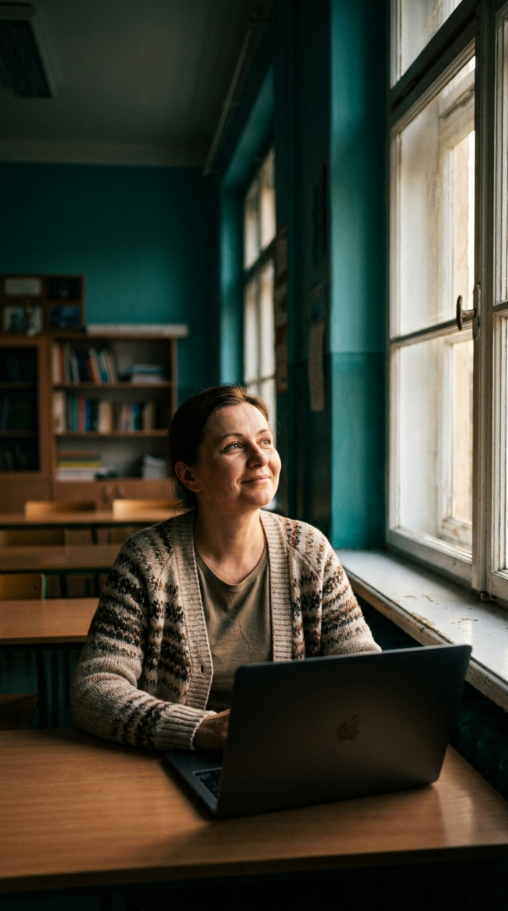

Nauczyciel jako przewodnik cyfrowy
AI przejmuje biurokrację. Ty wracasz do uczenia.
Roczne studia, po których używasz AI w codziennej pracy nauczyciela — sprawdzanie prac, materiały, egzaminy, sprawozdania, oceny — a po każdym zjeździe masz gotowe narzędzie do wykorzystania na lekcji.
80% ćwiczeń, 20% wykładów. Bez matematyki, bez kodu, bez klasycznego egzaminu końcowego.

Twoi uczniowie już korzystają z ChatGPT do prac domowych. To fakt, nie prognoza. Pytanie nie brzmi „czy", tylko „kto pokaże im, jak robić to uczciwie i odpowiedzialnie?". Ten kierunek robi z Ciebie tego kogoś — przewodnika, nie policjanta plagiatów.
To jest Moduł 3 „Nauczyciel jako przewodnik cyfrowy" — krytyczna ocena treści AI, higiena cyfrowa, budowanie samodzielności ucznia i wychowanie cyfrowe. Nie ma go w żadnym innym programie AI dla nauczycieli w Polsce.
MEN wprost wskazuje studia podyplomowe jako narzędzie przygotowania nauczycieli i dyrektorów do zmian. Od 1 września 2026 rusza nowa podstawa programowa z treściami o AI — nie tylko na informatyce. Równolegle, w ramach KPO, do szkół trafia sprzęt na bezprecedensową skalę.
Sprzęt i przepisy są już przesądzone — ale KPO wymaga, żeby pracownie AI były realnie wykorzystywane w nauczaniu, nie tylko stały w sali. Zostaje ogniwo, którego nie kupi się z dotacji: przygotowany nauczyciel. Szkoły mają na to około roku.
Kończysz kierunek w trakcie pierwszego roku reformy — z przewagą, zanim inni zaczną się orientować.
Nie jedna zmiana, tylko pięć równoległych wyzwań. Program odpowiada na każde z nich konkretnym narzędziem, które wynosisz z zajęć.
Reforma12 000 pracowni AI i 735 000 komputerów trafia do szkół. Dyrektorzy szukają kadry, która ten sprzęt realnie wykorzysta — nie zamknie w szafie.
Twoja przewagaW warsztatowym Module 2 opanujesz ChatGPT, Copilot, Gemini i NotebookLM oraz projektowanie nowoczesnych materiałów. Wychodzisz z kompetencjami, by zostać Szkolnym Liderem AI, który przeszkoli radę pedagogiczną i poprowadzi szkołę przez zmianę.
→ rola: Szkolny Lider AIReformaNowa podstawa nakazuje ograniczać kontakt z ekranami i dbać o cyfrowy dobrostan uczniów.
Twoja przewagaModuł 3 „Przewodnik cyfrowy" (unikat w Polsce): uczysz krytycznego myślenia wobec AI, weryfikacji źródeł (fake newsy, halucynacje) i zarządzania uwagą. Dostajesz gotowe konspekty zajęć wychowawczych i skrypty rozmów z rodzicami o przebodźcowaniu cyfrowym.
→ konspekty + skrypty dla rodzicówReformaKlasy IV–VIII mają obowiązek organizować Tydzień Projektowy, integrujący wiedzę z różnych dziedzin.
Twoja przewagaAI to najlepszy asystent planowania projektów. Uczysz się przekształcać ogólny pomysł w kompletny scenariusz z kartami pracy, quizami i rubrykami oceniania — w 30 minut zamiast wielu godzin.
→ scenariusz projektu w 30 minutReformaKształcenie uczniów z niepełnosprawnościami oparte na modelu biopsychospołecznym (ICF).
Twoja przewagaNa przedmiocie „AI w pracy z uczniem o SPE" projektujesz zajęcia w duchu UDL, błyskawicznie dostosowujesz i upraszczasz materiały (dysleksja, ADHD, spektrum, doświadczenie migracji) i szybciej tworzysz IPET-y.
→ dostosowane materiały + IPETReformaNowe przedmioty, dodatkowe godziny, obawy o RODO. Nauczyciele toną w dokumentacji.
Twoja przewagaUczysz się bezpiecznie — zgodnie z AI Act, RODO i prawem autorskim — automatyzować dokumentację, opinie, protokoły i komunikaty dla rodziców. Wychodzisz z pakietem 10 gotowych szablonów administracyjnych.
→ 10 szablonów administracyjnychNie „poznasz możliwości AI". Wychodzisz z konkretnymi, przetestowanymi sposobami na to, co i tak musisz zrobić — tylko w ułamku czasu.
Rubryki oceniania i spersonalizowana informacja zwrotna dla ucznia — w minuty, nie w niedzielny wieczór.
→ gotowa rubryka + szablonOd konspektu do gotowej lekcji w 30 minut. Zestawy zadań na różne poziomy trudności dla zróżnicowanej klasy.
→ 3 scenariusze lekcjiProtokoły, opinie, sprawozdania, komunikacja z rodzicami — szablony gotowe do wklejenia i użycia.
→ 10 szablonów adminOcenianie kształtujące wspierane AI: wyłapywanie typowych błędów, spójne kryteria — z Tobą jako ostatnim głosem.
→ system ocenianiaHarmonogramy, plany pracy, prezentacje na radę pedagogiczną. Automatyzujesz to, co i tak robisz co tydzień.
→ własny asystent AIUczysz uczniów mądrego, etycznego korzystania z AI. To odróżnia ten kierunek od zwykłego kursu obsługi ChatGPT.
Moduł 3 · unikatNie teoria o AI — realne narzędzia i gotowe materiały do klasy: prompty, rubryki, szablony, polityka AI szkoły. Wychodzisz z gotowymi materiałami, nie z samymi notatkami.
Jedyna w Polsce ścieżka o krytycznym, odpowiedzialnym korzystaniu z AI przez uczniów. Serce programu.
Nie generyczne case study. Realne wdrożenie AI w Twojej placówce — z pilotażem uruchomionym jeszcze w trakcie studiów.
Program konsultowany z praktykami AI i aktualizowany co semestr. Uczysz się na narzędziach z 2026, nie sprzed dwóch lat.
Startujesz, nawet jeśli dziś nie znasz AI. Krótki kurs „AI w 90 minut" i założenie kont ustawiają całą grupę na wspólny start przed pierwszym zjazdem.
Akredytacja PKA, profil praktyczny zatwierdzony przez ministerstwo, szkoła i uczeń w centrum — nie technika dla techniki.
ON.AI to stowarzyszenie praktyków sztucznej inteligencji. Ich patronat to nie logo na plakacie — to gwarancja, że program żyje w tempie realnego AI.
80% zajęć to ćwiczenia. Pracujesz na realnych narzędziach AI — ChatGPT, Copilot, Gemini, Claude, NotebookLM — na przykładach z Twojego przedmiotu.
Wdrożeniowy projekt realizujesz w kameralnej grupie seminaryjnej (do 10 osób) pod okiem promotora — uczysz się od innych nauczycieli z różnych szkół.
Systematycznie omawia z zespołem postępy prac i zadania do następnego spotkania. Realne wsparcie, nie tylko wykłady.
Zamiast stresu przy tablicy — projekt, który realnie wdrażasz u siebie, z prezentacją i rozmową, nie odpytywaniem.
14 zjazdów weekendowych: 10 stacjonarnie w Szczecinie, 4 online. Październik 2026 – czerwiec 2027.
Jak działa AI bez programowania · psychologia uczenia się · etyka pracy z uczniem
ChatGPT, Copilot, Gemini, Claude, NotebookLM · lekcje, ocenianie, specjalne potrzeby, admin
Krytyczna ocena AI · higiena cyfrowa · samodzielność ucznia · wychowanie cyfrowe
AI Act, RODO, prawa autorskie · liderstwo i szkolenie rady pedagogicznej
Grupowy projekt AI dla własnej szkoły · pilotaż w trakcie studiów · prezentacja końcowa
Pełne 2 semestry, jedna płatność.
Dwie raty w ciągu roku.
Rozłożone na cały rok nauki.
Świadectwo studiów podyplomowych ANS TWP · 35 ECTS · gotowe wdrożenie AI do Twojej szkoły na koniec.
Nie. Cały program jest pomyślany „bez matematyki i bez kodu". AI tłumaczymy metaforami z życia szkolnego, a pracujesz na gotowych narzędziach w przeglądarce.
Tak. Przed startem dostajesz zadania przygotowawcze: krótki kurs „AI w 90 minut", założenie kont i słowniczek pojęć. Cała grupa wchodzi w Moduł 1 z tym samym fundamentem — niezależnie od punktu wyjścia.
Dla każdego typu szkoły — przedszkola, podstawowej, ponadpodstawowej. Dla nauczycieli przedmiotowych, pedagogów, psychologów szkolnych, wychowawców i dyrektorów.
Zajęcia to 14 weekendowych zjazdów przez rok. Reszta to praca własna nad artefaktami i projektem wdrożeniowym — w tempie, które sam(a) ustawiasz między zjazdami.
Świadectwo studiów podyplomowych, 35 ECTS, zestaw gotowych narzędzi z każdego zjazdu oraz wdrożony (nie tylko zaplanowany) projekt AI dla Twojej szkoły.
Rekrutacja na edycję październik 2026 – czerwiec 2027 jest otwarta. Jedna edycja w roku, liczba miejsc ograniczona.